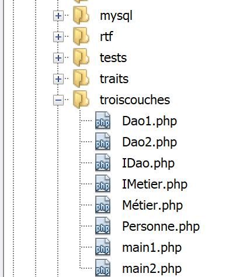

10. 分层应用
10.1. 引言

接下来我们将探讨如何将应用程序 PHP 进行分层结构化：

在此架构中，左侧层主动调用右侧层。各层的作用如下：
- [1]：名为 [dao]（数据访问对象）的层负责与外部数据仓库 [4]（文件、数据库、Web 服务等）进行交互。 该层有时也被称为 [DAL]（数据访问层），这一术语更能准确描述该层的作用。该层既可读取 [3] 数据，也可向 [2] 写入数据。 它由 [métier] 和 [6] 层调用，并向其返回 [7] 结果；
- [5]：一个名为 [métier] 的层，该层汇集了“业务”流程，并为其提供所需的所有数据。这通常是项目中最稳定的层，因为它不依赖于数据的获取方式。这些数据有两个来源：
- [9]：由脚本 PHP 提供的数据；
- [6,7]：向 [dao] 层请求的数据。
- [8]：主脚本是总指挥。在控制台应用程序中，它将：
- 创建 [métier] 和 [dao] 层；
- 执行应用程序的算法。该算法如同指挥家般运作：其中不包含任何“业务”代码或数据访问代码。主脚本仅调用 [métier] 和 [9] 层中的过程。 它完全忽略 [dao] 层和外部数据。它可以向 [métier] 层提供 [9] 数据。 在控制台应用程序中，这些数据可能来自配置文件或脚本用户。它从 [métier] 层接收 [10] 结果。 它可能需要存储某些结果：为此，它再次使用 [métier] 层的过程，这些过程将调用 [dao] 层来完成工作；
- 在处理结果的过程中，主脚本可能会收到异常。其职责是处理来自所有层的异常；
这种分层设计旨在便于应用程序的演进。为此，每一层都实现了相应的接口。假设：
- [dao] 层由类 [Dao] 实现，该类实现了接口 [IDao]；
- [métier] 层由类 [Métier] 实现，该类实现了接口 [IMétier]；
因此，[métier] 层的过程将使用 [IDao] 接口，而非 [Dao] 类。 这使得[Dao]层能够进行升级，而无需修改[Métier]层。假设在版本1中，[Dao1]层使用数据库中的数据。 经过升级，在版本 2 中，这些数据现在由 Web 服务 [Dao2] 提供。 需确保 [Dao1] 和 [Dao2] 这两个类都实现了相同的 [IDao] 接口，并且抛出相同的异常。 如果验证通过，与接口 [IDao] 配合工作的 [Métier] 层将保持不变；
同样的推理也适用于 [Métier] 层。
下面看一个使用类和接口的实现：

应用程序将实现以下分层结构：

10.2. 层间交换的对象
通常情况下，各层之间会交换各种对象。在此，它们将交换以下类 [Personne.php]：
<?php
// 一个人
class Personne {
// 标识符
private $id;
// 构造函数
public function __construct(int $id) {
$this->id = $id;
}
// toString
public function __toString(): string {
return "[Personne($this->id)]";
}
}
注释
- 第6行：该对象仅有一个属性，即其标识符[$id]。我们假设该标识符在数据仓库中唯一标识某个人；
- 第9-11行：用于根据标识符构建[Personne]类型的构造函数；
- 第14-16行：[__toString]方法，用于显示该人员的标识符；
10.3. [dao] 层
由 [dao, 1] 层实现的 [IDao] 接口如下所示：[IDao.php]：
<?php
// 层[dao] ------------------------
interface IDao {
// 从外部仓库提取人员
// 传递人员标识
public function get(int $id): Personne;
// 将人员信息保存至外部存储库
public function save(Personne $p): void;
}
该接口由以下 [Dao1] 类实现：[Dao1.php]：
<?php
class Dao1 implements IDao {
// 将人员数据保存至外部数据仓库
public function save(Personne $p): void {
print "[Dao1] : Sauvegarde de la personne $p en base de données [locale]\n";
}
// 从外部数据仓库中检索人员
public function get(int $id): Personne {
print "[Dao1] : Récupération de la personne d'identité ($id) en base de données [locale]\n";
return new Personne($id);
}
}
注释
- 该类不与数据仓库交互。仅通过显示消息来跟踪代码执行过程（第 7 行和第 12 行）；
- 第13行：确实返回了具有作为方法参数传递的ID（第11行）的人员；
我们还通过以下 [Dao2] 类实现了 [IDao] 接口：
<?php
class Dao2 implements IDao {
// 将人员数据保存到外部数据仓库
public function save(Personne $p): void {
print "[Dao2] : Sauvegarde de la personne $p en base de données [distante]\n";
}
// 从外部数据仓库检索人员
public function get(int $id): Personne {
print "[Dao2] : Récupération de la personne d'identité ($id) en base de données [distante]\n";
return new Personne($id);
}
}
类 [Dao2] 与类 [Dao1] 类似，只是我们修改了显示的消息。
10.4. [métier] 层
[métier, 2] 层提供以下 [IMétier] 接口：[IMetier.php]：
<?php
// [métier] 层 ------------------------
interface IMétier extends IDao {
// 根据ID查询某人
public function doSomething(Personne $p): void;
}
注释
- 接口 [IMétier] 扩展了接口 [IDao]。这完全不是必须的。这里这样做是因为示例比较简单；
- 第 7 行：方法 [doSomething] 专属于 [Métier] 层；
接口 [IMétier] 将由以下类 [Métier] 实现：[Métier.php]：
<?php
class Métier implements IMétier {
// 层 [dao]
private $dao;
// getter / setter
public function setDao(IDao $dao): void {
$this->dao = $dao;
}
public function getDao(): IDao {
return $this->dao;
}
// 剥削他人
public function doSomething(Personne $p): void {
// 处理
print "Métier : Traitement métier de la personne $p\n";
}
// 保存该人员
public function save(Personne $p): void {
print "[Métier] : Sauvegarde de la personne $p\n";
// 请求 [dao] 层进行保存
$this->dao->save($p);
}
public function get(int $id): Personne {
print "[Métier] : récupération de la personne d'identifiant $id\n";
// 向 [dao] 层请求该人员
$personne = $this->dao->get($id);
return $personne;
}
}
注释
- 第 5 行：[métier] 层必须引用 [dao] 层，才能使用后者的方法；
- 第8-10行：方法[setDao]用于将图层[métier]的引用设置为图层[dao]。 需要注意的是，该参数的类型为 [IDao]。因此，[métier] 层将能够与任何实现 [IDao] 接口的类进行协作。 如果从 [Dao1] 层切换到 [Dao2] 层，且两者都实现了 [IDao] 接口，则无需重写 [métier] 层；
- 第 17-20 行：[IMetier::doSomething] 的实现；
- 第 23-27 行：实现 [IMetier::save]。该方法需将某人保存至数据仓库。 [métier] 层无法执行此操作。它会调用 [dao] 层来完成此保存操作；
- 第29-34行：[IMetier::get]的实现。该方法需从数据仓库中检索作为参数传入的ID对应的人员。 [métier] 层无法执行此操作。它调用 [dao] 层来完成该任务（第 32 行）；
结论
一旦 [métier] 层需要访问数据仓库中存储的数据，它必须通过专门用于访问这些数据的 [dao] 层。
10.5. 主脚本
我们将编写两个脚本，作为该应用程序的协调者。第一个脚本 [main1.php] 将使用 [Dao1] 层，而第二个脚本 [main2.php] 将使用 [Dao2] 层。 我们希望说明，这不会对 [Métier] 层的代码产生任何影响。
脚本 [main1.php] 如下：
<?php
// 严格遵守函数参数
declare (strict_types=1);
// 包含类和接口
require_once __DIR__."/Personne.php";
require_once __DIR__."/IDao.php";
require_once __DIR__."/IMetier.php";
require_once __DIR__."/Dao1.php";
require_once __DIR__."/Métier.php";
// 测试 ----------------
// 创建层
$dao1 = new Dao1();
$métier = new Métier();
$métier->setDao($dao1);
// 使用图层[métier]
$personne = $métier->get(4);
$métier->doSomething($personne);
$métier->save($personne);
注释
- 回顾几点：脚本 [main1.php] 是应用程序的总指挥。它创建应用程序的分层结构（第 15-17 行），随后开始与 [métier] 层进行交互（第 19-21 行）。 分层结构实际上如下所示：
根据该架构，脚本 [main1.php] 仅应与 [métier] 层进行交互。即使理论上可行，它也不应与 [dao] 层进行交互。
执行结果如下：
[Métier] : récupération de la personne d'identifiant 4
[Dao1] : Récupération de la personne d'identité (4) en base de données [locale]
[Métier] : Traitement métier de la personne [Personne(4)]
[Métier] : Sauvegarde de la personne [Personne(4)]
[Dao1] : Sauvegarde de la personne [Personne(4)] en base de données [locale]
注释
- 代码的第10行导致了结果的第1行和第2行被写入；
- 代码第20行导致输出结果的第3行；
- 代码第21行导致写入了结果的第4行和第5行；
脚本 [main2.php] 如下：
<?php
// 严格遵守函数参数
declare (strict_types=1);
// 类和接口的引入
require_once __DIR__."/Personne.php";
require_once __DIR__."/IDao.php";
require_once __DIR__."/IMetier.php";
require_once __DIR__."/Dao2.php";
require_once __DIR__."/Métier.php";
// 测试 ----------------
// 创建层
$dao2 = new Dao2();
$métier = new Métier();
$métier->setDao($dao2);
// 使用层[métier]
$personne = $métier->get(4);
$métier->doSomething($personne);
$métier->save($personne);
注释
- 第 36-38 行：分层结构现在使用 [Dao2] 层；
执行结果如下：
[Métier] : récupération de la personne d'identifiant 4
[Dao2] : Récupération de la personne d'identité (4) en base de données [distante]
[Métier] : Traitement métier de la personne [Personne(4)]
[Métier] : Sauvegarde de la personne [Personne(4)]
[Dao2] : Sauvegarde de la personne [Personne(4)] en base de données [distante]
[Dao1] 层模拟对本地数据库的访问，而 [Dao2] 层模拟对远程数据库的访问。 只要这两个层都遵循 [IDao] 接口，就可以看到 [Métier] 层的代码无需更改。
我们将把刚刚学到的知识应用到作为主线的税款计算练习中。